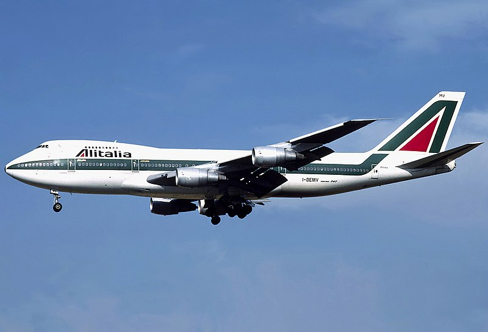
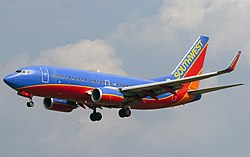
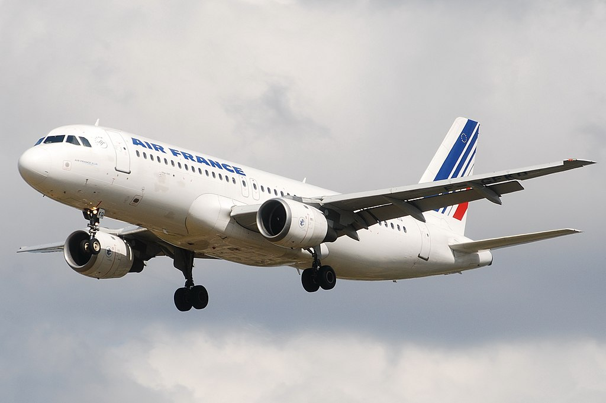
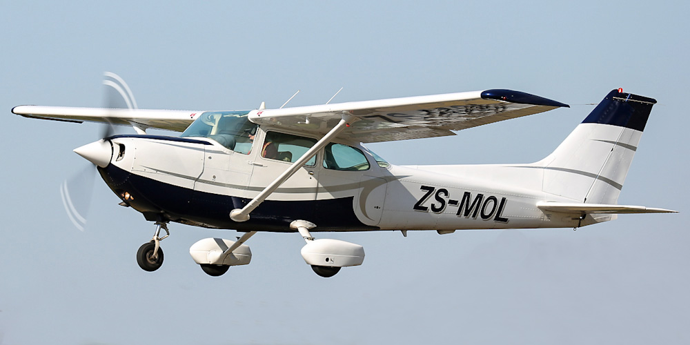
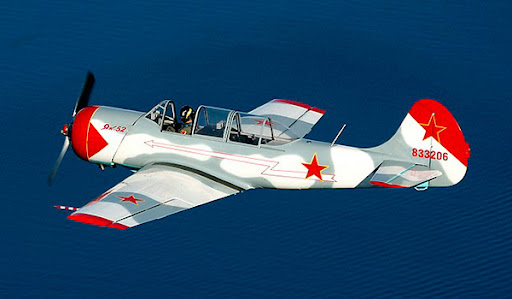
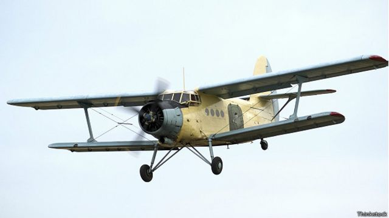

Здесь вы можете просмотреть летно-технические характеристики разных летательных аппараттов
1.Пассажирские самолёты
-
Boeing 747

- Длина лайнера, м: 70.51
- Высота лайнера, м: 19.33
- Масса лайнера, кг - максимальная взлетная: 333'400
- Крейсерская скорость лайнера, км/ч: 896
Boeing 737

- Длина лайнера - 30.53 метров
- Высота лайнера - 11.28 метров
- Масса максимальная взлетная лайнера - 53'070 кг
- Крейсерская скорость лайнера - 927 км/ч
Airbus A320

- Длина самолета – 37.57 м.
- Высота самолета – 11.76 м.
- Максимальная взлетная масса – 73500 кг.
- Крейсерская скорость – 900 км/ч.
2.Таблица легко-моторных самолетов
| Наименнование ЛА |
Сеssna-172 |
Як-52 |
Ан-2 |
| Фото |
 |
 |
 |
Крейсерская скорость |
226 км/ч |
230 км/ч |
190 км/ч |
Длина самолета |
8,28 м |
7,48 м |
12 м |